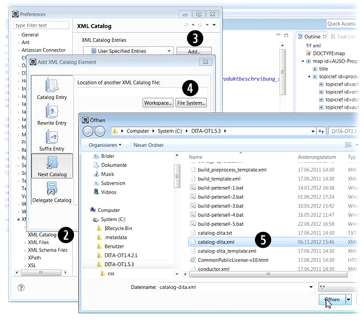

Eclipse eignet sich gut als Quelldateien-Editor. Damit die DITA-Dateien validiert werden können, gilt es, die DTDs einzubinden.
|
Tip
|
Voraussetzung
Sie müssen das Java JDK und Eclipse installiert haben. Ein Java JRE war in meinem Fall nicht ausreichend. |

-
Klicken Sie in Eclipse auf Window > Preferences.
-
Öffnen Sie die Menüverzeichnisbaum unterhalb XML und klicken Sie auf XML Catalog.
-
Klicken Sie im Fenster Preferences auf Add.
-
Klicken Sie auf Next Catalog und anschließend auf File System.
-
Springen Sie im Fenster Öffnen auf die Datei
catalog-dita.xmlim Hauptverzeichnis Ihres aktuellen DITA Open Toolkits.